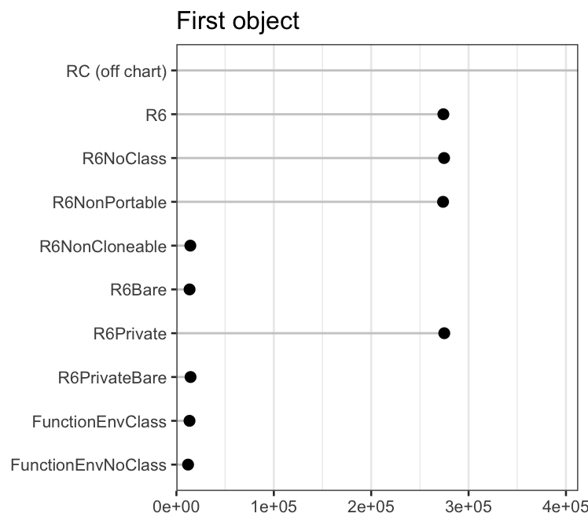
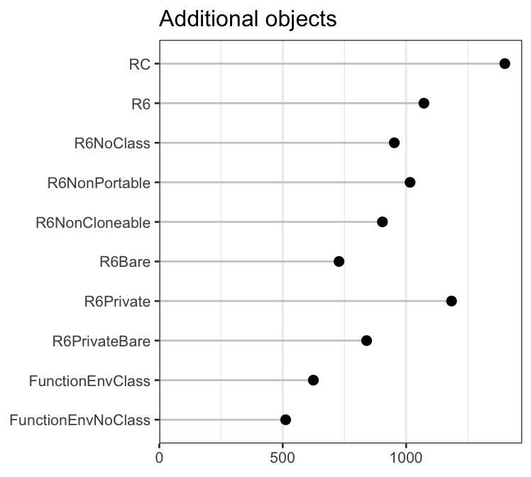
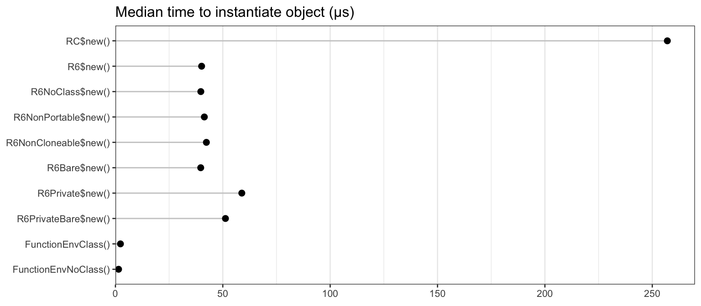
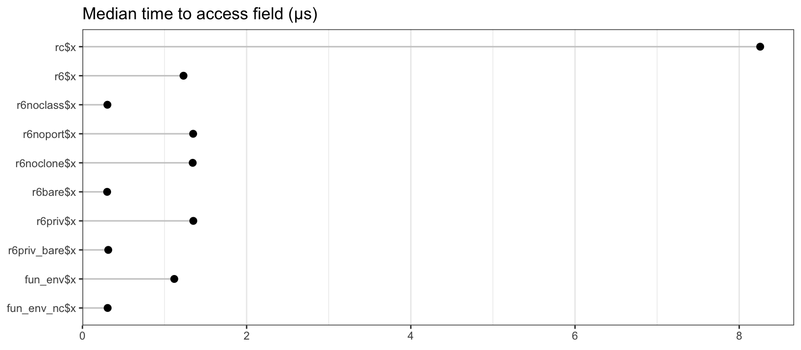
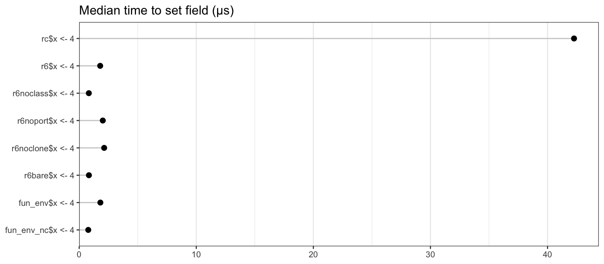
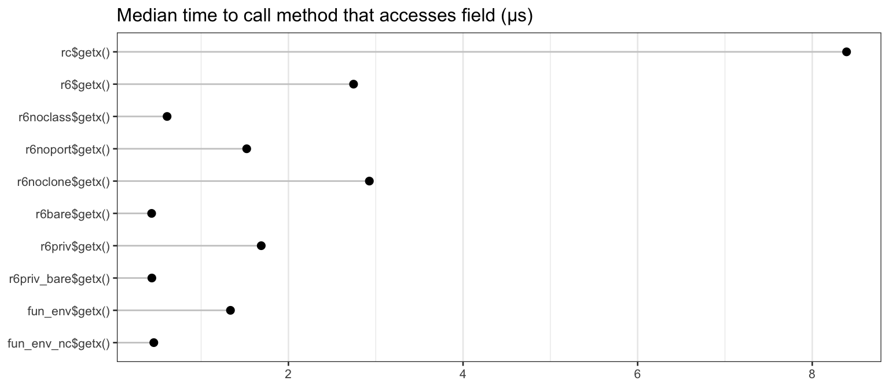
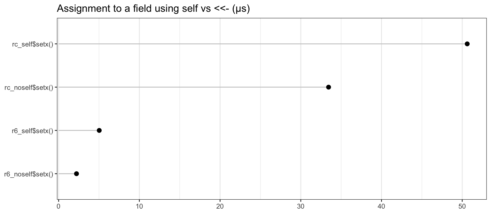

This document compares the memory costs and speed of R’s reference classes against R6 classes and simple environments. For must uses, R6 and reference classes have comparable features, but as we’ll see, R6 classes are faster and lighter weight.
This document tests reference classes against R6 classes (in many variations), as well as against very simple reference objects: environments created by function calls.
First we’ll load some packages which will be used below:
library(microbenchmark)
options(microbenchmark.unit = "us")
library(pryr) # For object_size function
library(R6)We’ll start by defining a number of classes or class-like entities, using reference classes, R6 classes, and simple environments that are created directly by functions. There are a number of options for R6 that can affect the size of the resulting objects, so we will use a number of variants. These classes will be used for the speed and memory tests that follow. This is a lot of boring code, so you may want to skip ahead to the results.
All of these classes have the same basic characteristics:
x that contains a number.x.getx for retrieving the value of x.inc for incrementing the value of x.The fields and methods are accessed with the $ operator, so if we have an object named obj, we could use obj$x or obj$getx().
RC <- setRefClass("RC",
fields = list(x = "numeric"),
methods = list(
initialize = function(x = 1) .self$x <- x,
getx = function() x,
inc = function(n = 1) x <<- x + n
)
)In reference classes, the binding that points back to the object is named .self. Within a method, assignment can be done by using .self, as in .self$x <- 10, or by using <<-, as in x <<- 10.
To create an object, simply call $new() on the class:
Creating an R6 class is similar to the reference class, except that there’s no need to separate the fields and methods, and you can’t specify the types of the fields.
R6 <- R6Class("R6",
public = list(
x = NULL,
initialize = function(x = 1) self$x <- x,
getx = function() self$x,
inc = function(n = 1) self$x <- x + n
)
)Whereas reference classes use .self, R6 classes use self (without the leading period). As with reference classes, objects are instantiated by calling $new():
R6$new()
#> <R6>
#> Public:
#> clone: function (deep = FALSE)
#> getx: function ()
#> inc: function (n = 1)
#> initialize: function (x = 1)
#> x: 1An R6 object essentially just a set of environments structured in a particular way. The fields and methods for an R6 object have bindings (that is, they have names) in the public environment. There is also have a separate environment which is the enclosing environment for methods (they “run in” an environment that contains a binding named self, which is simply a reference to the public environment).
By default, a class attribute is added to R6 objects. This attribute adds a slight performance penalty because R will attempt to use S3 dispatch when using $ on the object.
It’s possible generate objects without the class attribute, by using class=FALSE:
R6NoClass <- R6Class("R6NoClass",
class = FALSE,
public = list(
x = NULL,
initialize = function(x = 1) self$x <- x,
getx = function() self$x,
inc = function(n = 1) self$x <- self$x + n
)
)Note that without the class attribute, S3 method dispatch on the objects is not possible.
By default, R6 objects are portable. This means that inheritance can be in classes that are in different packages. However, it also requires the use of self$ and private$ to access members, and this incurs a small performance penalty.
If portable=FALSE is used, members can be accessed without using self$, and assignment can be done with <<-:
cloneable=FALSE
By default, R6 objects have a clone() method, which is a fairly large function. If you do not need this feature, you can save some memory by using cloneable=FALSE.
For comparison, we’ll use a an R6 class that is without a class attribute, non-portable, and non-cloneable. This is the most stripped-down we can make an R6 object.
This variant has public and private members.
R6Private <- R6Class("R6Private",
private = list(x = NULL),
public = list(
initialize = function(x = 1) private$x <- x,
getx = function() private$x,
inc = function(n = 1) private$x <- private$x + n
)
)Instead of a single self object which refers to all items in an object, these objects have self (which refers to the public items) and private.
For comparison, we’ll add a version that is without a class attribute, non-portable, and non-cloneable.
In R, environments are passed by reference. A simple way to create an object that’s passed by reference is to use the environment created by the invocation of a function. The function below captures that environment, attaches a class to it, and returns it:
FunctionEnvClass <- function(x = 1) {
inc <- function(n = 1) x <<- x + n
getx <- function() x
self <- environment()
class(self) <- "FunctionEnvClass"
self
}Even though x isn’t declared in the function body, it gets captured because it’s an argument to the function.
Objects created this way are very similar to those created by R6 generator we created above.
We can make an even simpler type of reference object to the previous one, by not having a a class attribute, and not having self object:
FunctionEnvNoClass <- function(x = 1) {
inc <- function(n = 1) x <<- x + n
getx <- function() x
environment()
}This is simply an environment with some objects in it.
For all the timings using microbenchmark(), the results are reported in microseconds, and the most useful value is probably the median column.
How much memory does a single instance of each object take, and how much memory does each additional object take? We’ll use the functions obj_size and obj_sizes (shown at the bottom of this document) to calculate the sizes.
Sizes of each type of object, in bytes:
sizes <- obj_sizes(
RC$new(),
R6$new(),
R6NoClass$new(),
R6NonPortable$new(),
R6NonCloneable$new(),
R6Bare$new(),
R6Private$new(),
R6PrivateBare$new(),
FunctionEnvClass(),
FunctionEnvNoClass()
)
sizes
#> one incremental
#> RC$new() 577360 1400
#> R6$new() 274120 1072
#> R6NoClass$new() 274840 952
#> R6NonPortable$new() 273792 1016
#> R6NonCloneable$new() 14288 904
#> R6Bare$new() 13488 728
#> R6Private$new() 275032 1184
#> R6PrivateBare$new() 14512 840
#> FunctionEnvClass() 13432 624
#> FunctionEnvNoClass() 11952 512The results are plotted below. Note that the plots have very different x scales.

Some preliminary observations about the first instance of various classes: Using a reference class consumes a large amount of memory. For R6 objects, the option with the largest impact is cloneable: not having the clone() method saves around 40 kB of memory.
For subsequent instances of these classes, there isn’t nearly as much difference between the different kinds.
It appeared that using a reference class takes up a huge amount of memory, but much of that is shared between reference classes. Adding an object from a different reference class doesn’t require much more memory — around 38KB:
RC2 <- setRefClass("RC2",
fields = list(x = "numeric"),
methods = list(
initialize = function(x = 2) .self$x <<- x,
inc = function(n = 2) x <<- x * n
)
)
# Calcualte the size of a new RC2 object, over and above an RC object
as.numeric(object_size(RC$new(), RC2$new()) - object_size(RC$new()))
#> [1] 30776How much time does it take to create one of these objects? This shows the median time, in microseconds:
# Function to extract the medians from microbenchmark results
mb_summary <- function(x) {
res <- summary(x, unit="us")
data.frame(name = res$expr, median = res$median)
}
speed <- microbenchmark(
RC$new(),
R6$new(),
R6NoClass$new(),
R6NonPortable$new(),
R6NonCloneable$new(),
R6Bare$new(),
R6Private$new(),
R6PrivateBare$new(),
FunctionEnvClass(),
FunctionEnvNoClass()
)
speed <- mb_summary(speed)
speed
#> name median
#> 1 RC$new() 267.3065
#> 2 R6$new() 45.4060
#> 3 R6NoClass$new() 42.9870
#> 4 R6NonPortable$new() 43.4425
#> 5 R6NonCloneable$new() 43.4010
#> 6 R6Bare$new() 38.8245
#> 7 R6Private$new() 64.1865
#> 8 R6PrivateBare$new() 55.9105
#> 9 FunctionEnvClass() 2.2650
#> 10 FunctionEnvNoClass() 1.5445The plot below shows the median instantiation time.

Reference classes are much slower to instantiate than the other types of classes. Instantiating R6 objects is roughly 5 times faster. Creating an environment with a simple function call is another 20-30 times faster.
How much time does it take to access a field in an object? First we’ll make some objects:
rc <- RC$new()
r6 <- R6$new()
r6noclass <- R6NoClass$new()
r6noport <- R6NonPortable$new()
r6noclone <- R6NonCloneable$new()
r6bare <- R6Bare$new()
r6priv <- R6Private$new()
r6priv_bare <- R6PrivateBare$new()
fun_env <- FunctionEnvClass()
fun_env_nc <- FunctionEnvNoClass()And then get a value from these objects:
speed <- microbenchmark(
rc$x,
r6$x,
r6noclass$x,
r6noport$x,
r6noclone$x,
r6bare$x,
r6priv$x,
r6priv_bare$x,
fun_env$x,
fun_env_nc$x
)
speed <- mb_summary(speed)
speed
#> name median
#> 1 rc$x 8.5135
#> 2 r6$x 1.2330
#> 3 r6noclass$x 0.3030
#> 4 r6noport$x 1.3405
#> 5 r6noclone$x 1.3505
#> 6 r6bare$x 0.2945
#> 7 r6priv$x 1.3635
#> 8 r6priv_bare$x 0.3175
#> 9 fun_env$x 1.1285
#> 10 fun_env_nc$x 0.3050
Accessing the field of a reference class is much slower than the other methods.
There’s also an obvious pattern where accessing the field of an environment (created by R6 or a function call) is slower when there is a class attribute. This is because, for the objects that have a class attribute, R attempts to look up an S3 method for $, and this lookup has a performance penalty. We’ll see more about this below.
How much time does it take to set the value of a field in an object?
speed <- microbenchmark(
rc$x <- 4,
r6$x <- 4,
r6noclass$x <- 4,
r6noport$x <- 4,
r6noclone$x <- 4,
r6bare$x <- 4,
# r6priv$x <- 4, # Can't set private field directly,
# r6priv_nc_np$x <- 4, # so we'll skip these two
fun_env$x <- 4,
fun_env_nc$x <- 4
)
speed <- mb_summary(speed)
speed
#> name median
#> 1 rc$x <- 4 37.6860
#> 2 r6$x <- 4 1.9560
#> 3 r6noclass$x <- 4 0.9250
#> 4 r6noport$x <- 4 2.1815
#> 5 r6noclone$x <- 4 2.2135
#> 6 r6bare$x <- 4 0.9560
#> 7 fun_env$x <- 4 1.9585
#> 8 fun_env_nc$x <- 4 0.8795
Reference classes are significantly slower than the others, again. In this case, there’s additional overhead due to type-checking the value.
Once more, the no-class objects are significantly faster than the others, again probably due to attempted S3 dispatch on the `$<-` function.
How much overhead is there when calling a method from one of these objects? All of these getx() methods simply return the value of x in the object. When necessary, this method uses self$x (for R6 classes, when portable=TRUE), and in others, it just uses x (when portable=FALSE, and in reference classes).
speed <- microbenchmark(
rc$getx(),
r6$getx(),
r6noclass$getx(),
r6noport$getx(),
r6noclone$getx(),
r6bare$getx(),
r6priv$getx(),
r6priv_bare$getx(),
fun_env$getx(),
fun_env_nc$getx()
)
speed <- mb_summary(speed)
speed
#> name median
#> 1 rc$getx() 10.1260
#> 2 r6$getx() 3.0640
#> 3 r6noclass$getx() 0.8105
#> 4 r6noport$getx() 1.7850
#> 5 r6noclone$getx() 3.4740
#> 6 r6bare$getx() 0.5445
#> 7 r6priv$getx() 1.9930
#> 8 r6priv_bare$getx() 0.5295
#> 9 fun_env$getx() 1.6390
#> 10 fun_env_nc$getx() 0.5310
The reference class is the slowest.
r6 is also somewhat slower than the others. There are two reasons for this: first, it uses self$x which adds some time, and second, it has a class attribute, which slows down the access of both r6$getx and self$x.
One might expect r6priv to be the same speed as r6, but it is faster. Although accessing r6priv$getx is slow because r6priv has a class attribute, accessing private$x is faster because it does not have a class attribute.
The objects which can access x directly (without self or private) and which lack a class attribute are the fastest.
self$x <- vs. x <<-
With reference classes, you can modify fields using the <<- operator, or by using the .self object. For example, compare the setx() methods of these two classes:
RCself <- setRefClass("RCself",
fields = list(x = "numeric"),
methods = list(
initialize = function() .self$x <- 1,
setx = function(n = 2) .self$x <- n
)
)
RCnoself <- setRefClass("RCnoself",
fields = list(x = "numeric"),
methods = list(
initialize = function() x <<- 1,
setx = function(n = 2) x <<- n
)
)Non-portable R6 classes are similar, except they use self instead of .self.
R6self <- R6Class("R6self",
portable = FALSE,
public = list(
x = 1,
setx = function(n = 2) self$x <- n
)
)
R6noself <- R6Class("R6noself",
portable = FALSE,
public = list(
x = 1,
setx = function(n = 2) x <<- n
)
)rc_self <- RCself$new()
rc_noself <- RCnoself$new()
r6_self <- R6self$new()
r6_noself <- R6noself$new()
speed <- microbenchmark(
rc_self$setx(),
rc_noself$setx(),
r6_self$setx(),
r6_noself$setx()
)
speed <- mb_summary(speed)
speed
#> name median
#> 1 rc_self$setx() 47.9465
#> 2 rc_noself$setx() 29.6430
#> 3 r6_self$setx() 4.9890
#> 4 r6_noself$setx() 2.3730
For both reference and non-portable R6 classes, assignment using .self$x <- is somewhat slower than using x <<-.
Bear in mind that, by default, R6 classes are portable, and can’t use assignment with x <<-.
$ on objects with a class attributeThere is some overhead when using $ on an object that has a class attribute. In the test below, we’ll create three different kinds of objects:
"e2", but without a $.e2 S3 method."e3", which has a $.e3 S3 method that simply returns NULL.Each one of these environments will contain an object x.
e1 <- new.env(hash = FALSE, parent = emptyenv())
e2 <- new.env(hash = FALSE, parent = emptyenv())
e3 <- new.env(hash = FALSE, parent = emptyenv())
e1$x <- 1
e2$x <- 1
e3$x <- 1
class(e2) <- "e2"
class(e3) <- "e3"
# Define an S3 method for class e3
`$.e3` <- function(x, name) {
NULL
}Now we can run timing tests for calling $ on each type of object. Note that for the e3 object, the $ function does nothing — it simply returns NULL.
speed <- microbenchmark(
e1$x,
e2$x,
e3$x
)
speed <- mb_summary(speed)
speed
#> name median
#> 1 e1$x 0.251
#> 2 e2$x 0.978
#> 3 e3$x 0.836Using $ on e2 and e3 is much slower than on e1. This is because e2 and e3 have a class attribute. Even though there’s no $ method defined for e2, doing e2$x still about 6 times slower than e1$x, simply because R looks for an appropriate S3 method.
e3$x is slightly faster than e2$x; this is probably because the $.e3 function doesn’t actually do anything other than return NULL.
If an object has a class attribute, R will attempt to look for a method every time $ is called. This can slow things down considerably, if $ is used often.
$ vs. [[
Lists could also be used for creating classes (albeit not with reference semantics). How much time does it take to access items using $ for lists vs. environments? We’ll also compare using obj$x to obj[['x']].
lst <- list(x = 10)
env <- new.env()
env$x <- 10
mb_summary(microbenchmark(
lst = lst$x,
env = env$x,
lst[['x']],
env[['x']]
))
#> name median
#> 1 lst 0.277
#> 2 env 0.259
#> 3 lst[["x"]] 0.218
#> 4 env[["x"]] 0.191Performance is comparable across environments and lists.
The [[ operator is slightly faster than $, probably because it doesn’t need to convert the unevaluated symbol to a string.
R6 objects take less memory and are significantly faster than R’s reference class objects, and they also have some options that provide for even more speed.
In these tests, the biggest speedup for R6 classes comes from not using a class attribute; this speeds up the use of $. Non-portable R6 classes can also access fields without $ at all, which provides another modest speed boost. In most cases, these speed increases are negligible – they are on the order of microseconds and will be noticeable only when tens or even hundreds of thousands of class member accesses are performed.
# Utility functions for calculating sizes
obj_size <- function(expr, .env = parent.frame()) {
size_n <- function(n = 1) {
objs <- lapply(1:n, function(x) eval(expr, .env))
as.numeric(do.call(object_size, objs))
}
data.frame(one = size_n(1), incremental = size_n(2) - size_n(1))
}
obj_sizes <- function(..., .env = parent.frame()) {
exprs <- as.list(match.call(expand.dots = FALSE)$...)
names(exprs) <- lapply(1:length(exprs),
FUN = function(n) {
name <- names(exprs)[n]
if (is.null(name) || name == "") paste(deparse(exprs[[n]]), collapse = " ")
else name
})
sizes <- mapply(obj_size, exprs, MoreArgs = list(.env = .env), SIMPLIFY = FALSE)
do.call(rbind, sizes)
}sessionInfo()
#> R version 3.5.1 (2018-07-02)
#> Platform: x86_64-apple-darwin15.6.0 (64-bit)
#> Running under: macOS High Sierra 10.13.6
#>
#> Matrix products: default
#> BLAS: /Library/Frameworks/R.framework/Versions/3.5/Resources/lib/libRblas.0.dylib
#> LAPACK: /Library/Frameworks/R.framework/Versions/3.5/Resources/lib/libRlapack.dylib
#>
#> locale:
#> [1] en_US.UTF-8/en_US.UTF-8/en_US.UTF-8/C/en_US.UTF-8/en_US.UTF-8
#>
#> attached base packages:
#> [1] stats graphics grDevices utils datasets methods base
#>
#> other attached packages:
#> [1] scales_1.0.0 ggplot2_3.0.0.9000 R6_2.2.2.9001
#> [4] pryr_0.1.4 microbenchmark_1.4-4
#>
#> loaded via a namespace (and not attached):
#> [1] Rcpp_0.12.18 compiler_3.5.1 pillar_1.3.0
#> [4] plyr_1.8.4 bindr_0.1.1 tools_3.5.1
#> [7] digest_0.6.16 evaluate_0.11 memoise_1.1.0
#> [10] tibble_1.4.2 gtable_0.2.0 pkgconfig_2.0.2
#> [13] rlang_0.2.2 rstudioapi_0.7 commonmark_1.5
#> [16] yaml_2.2.0 pkgdown_1.1.0.9000 xfun_0.3
#> [19] bindrcpp_0.2.2 withr_2.1.2 stringr_1.3.1
#> [22] dplyr_0.7.6 roxygen2_6.1.0.9000 xml2_1.2.0
#> [25] knitr_1.20.15 desc_1.2.0 fs_1.2.6
#> [28] tidyselect_0.2.4 rprojroot_1.3-2 grid_3.5.1
#> [31] glue_1.3.0 rmarkdown_1.10 purrr_0.2.5
#> [34] magrittr_1.5 backports_1.1.2 codetools_0.2-15
#> [37] htmltools_0.3.6.9003 MASS_7.3-50 assertthat_0.2.0
#> [40] colorspace_1.3-2 labeling_0.3 stringi_1.2.4
#> [43] lazyeval_0.2.1 munsell_0.5.0 crayon_1.3.4